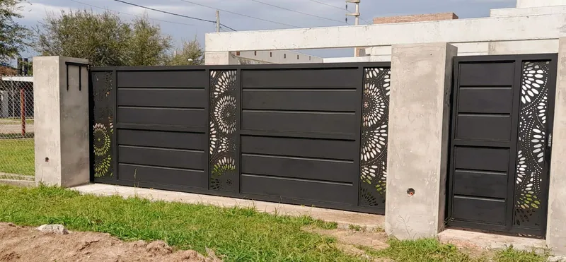
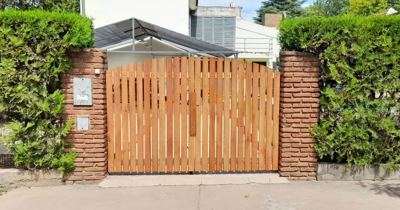
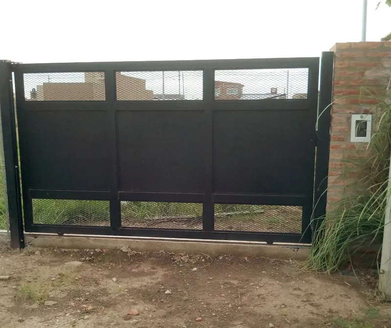
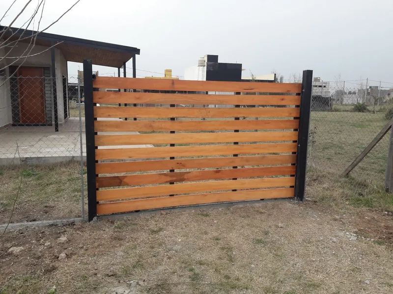
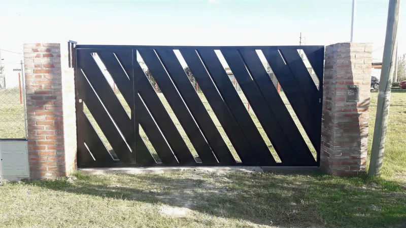
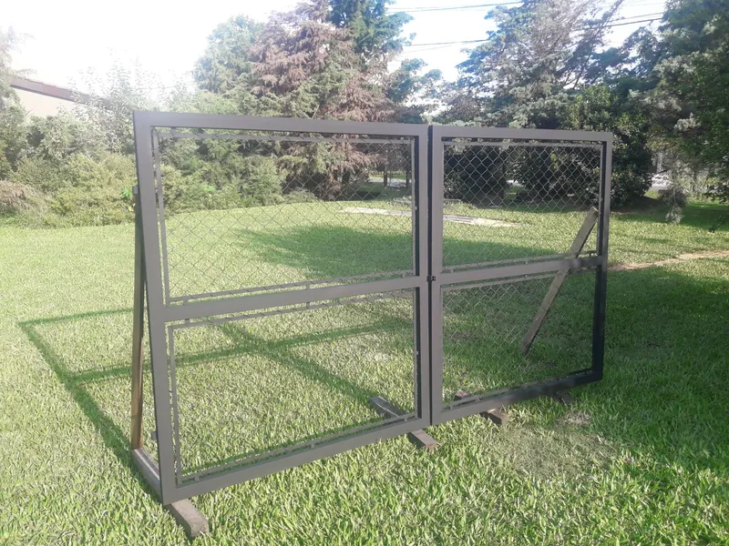
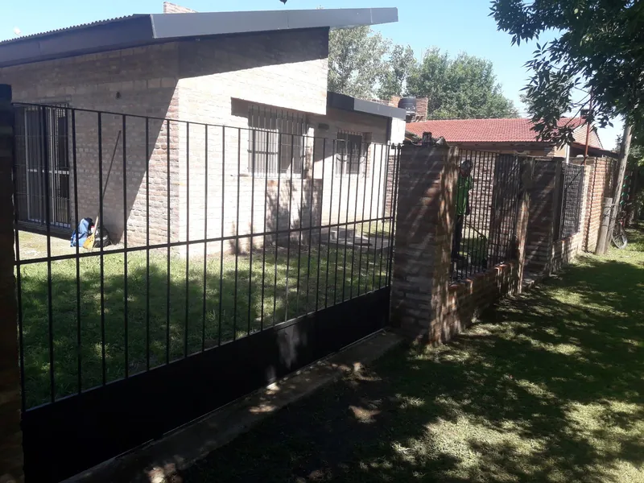
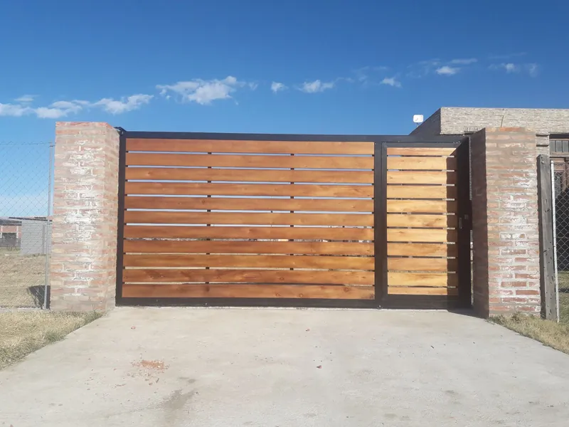

Portones y puertas
Portones y puertas a medida. Diseños originales.
- En madera y acero
- Corredizos
- De abrir
- Portones y puertas de exterior
- Herrería general
- Rejas
- Escaleras
Trabajos realizados:

















Contanos tu proyecto
Te respondemos a la brevedad.